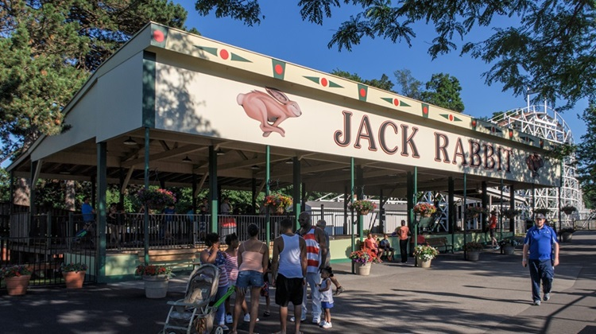

Seabreeze Amusement Park
Perched along the shores of Lake Ontario, Seabreeze Amusement Park is a timeless destination where generations of visitors have come to enjoy summer thrills and family fun. With a perfect blend of classic rides, modern attractions, and a refreshing water park, Seabreeze captures the essence of a nostalgic yet ever-evolving amusement park experience. Whether you're soaring through the sky on the Wave Swinger, cooling off on the Log Flume, or indulging in some classic fried dough, there's a little something for everyone. And with its scenic location, the views of the lake make every visit feel like a true getaway.
The Jack Rabbit: The Oldest Roller Coaster in America
No trip to Seabreeze is complete without a ride on the Jack Rabbit, the park's most legendary attraction. Built in 1920, this historic wooden coaster is the oldest continuously operating roller coaster in America, delivering over a century of thrills. With its signature drops, sharp turns, and an unforgettable final plunge, the Jack Rabbit remains a favorite among coaster enthusiasts and casual riders alike. The unmistakable sound of its wooden tracks and the rush of the wind as it speeds down the hills make it a true classic—one that has delighted generations and still delivers the same heart-pounding excitement today.